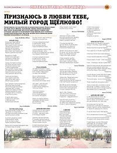

<!DOCTYPE HTML>
<html>
<head>
<link rel="shortcut icon" href="favicon.png" type="image/png" />
</head>
<body>
</body>
</html>

<head>
	<meta http-equiv="content-type" content="text/html; charset=utf-8" />
	<meta name="author" content="Gnatkovsky" />

	<title>Антон Бутовец</title>
    <script type="text/javascript" src="https://ajax.googleapis.com/ajax/libs/jquery/1.10.1/jquery.min.js"></script>
 <style>
/*demo page style*/
    body{background: #f0f0f0;}
    p{line-height:1.5em; padding-bottom:1em;}
    #wrapper{
        width:920px;
        margin:0 auto;
        padding: 0;
    }
    #header {height: 150px;}
/*main menu*/
    #menu{
        text-transform: uppercase;
        text-align: center;
        line-height: 50px;
        background: #333;
    }
    #menu ul{padding:0; margin:0;}
    #menu li{
        display: inline;
        list-style:none;
        margin: 5px 10px;
    }
    #menu li a{
        padding:5px 10px;
        color:#fff;
        text-decoration: none;
        -webkit-border-radius: 5px;
        -moz-border-radius: 5px;
        border-radius: 5px;
    }
    #menu li a:hover{
        background: #36c;
        color: #ff0;
        -webkit-transition-property: color, background;
        -webkit-transition-duration: 0.5s, 0.5s;
    }
    .default{
        width:920px;
    }
    .fixed{
        position:fixed;
        top:-5px; left:0;
        width:100%;
        padding:10px 0;
    }
</style>
<script type="text/javascript">
    $(document).ready(function(){
        
        var $menu = $("#menu");
            
        $(window).scroll(function(){
            if ( $(this).scrollTop() > 100 && $menu.hasClass("default") ){
                $menu.fadeOut('fast',function(){
                    $(this).removeClass("default")
                           .addClass("fixed transbg")
                           .fadeIn('fast');
                });
            } else if($(this).scrollTop() <= 100 && $menu.hasClass("fixed")) {
                $menu.fadeOut('fast',function(){
                    $(this).removeClass("fixed transbg")
                           .addClass("default")
                           .fadeIn('fast');
                });
            }
        });        
    });
</script>
</head>

<body>
<div id="wrapper">
    <div id="header">
        <div id="logo">
            <h2>АНТОН БУТОВЕЦ &nbsp;&nbsp;&nbsp;&nbsp;&nbsp;&nbsp;&nbsp;&nbsp;&nbsp;&nbsp;&nbsp;&nbsp;&nbsp;&nbsp;&nbsp;&nbsp;&nbsp;&nbsp;&nbsp;&nbsp;&nbsp; официальный сайт &nbsp;&nbsp;&nbsp;&nbsp;&nbsp;&nbsp;&nbsp;&nbsp;&nbsp;&nbsp;&nbsp;&nbsp;&nbsp;&nbsp;&nbsp;&nbsp;&nbsp;&nbsp;&nbsp;&nbsp;&nbsp;&nbsp;&nbsp;&nbsp;&nbsp;&nbsp;&nbsp;&nbsp;&nbsp;&nbsp;&nbsp;&nbsp;&nbsp;&nbsp;&nbsp;&nbsp;&nbsp;&nbsp; <a href="https://www.facebook.com/a.butovets"target="_blank"></a> &nbsp; <a href="https://www.instagram.com/a_butovets/"target="_blank"></a></h2>
        </div>
        <div id="menu" class="default">
            <ul>
                <li><a href="index">БИО</a></li>
                <li><a href="novosti">НОВОСТИ</a></li>
                <li><a href="tv">ТВ</a></li>
                <li><a href="radio">РАДИО</a></li>
		<li><a href="books">КНИГИ</a></li>
		<li><a href="contakt">КОНТАКТЫ</a></li>
            </ul>
        </div>
    </div>
    <div id="content">
	    


	
	
	
	<h2>Щёлковский сквер</h2>
		<p><b>Одно из ранних стихотворений Антона Бутовца попало в подборку очередного выпуска "Литературной страницы" газеты "Время" от 16 июня 2018 года.</b></p> 
		<p>&nbsp;&nbsp;&nbsp;&nbsp;&nbsp;&nbsp;<a href="skver.pdf"target="_blank" style="text-decoration: none;">Открыть страницу (PDF)</a><br><i>«Хорошо известно, что наш район богат на литературные таланты. Почти в каждом
его уголке, будь то Щёлково, Загорянский, Гребнево, Здехово или Фряново,
живут поэты, воспевающие свою малую родину. Любовь к родному краю
и молодому, цветущему и гостеприимному городу Щёлково часто становилась
главной темой литературного творчества местных поэтов. Предлагаем нашим
читателям познакомиться с их стихами»</i> - говорится в предисловии к подборке.</p>
		<br>
		<p>&nbsp;&nbsp;&nbsp;&nbsp;&nbsp;&nbsp;&nbsp;&nbsp;&nbsp;&nbsp;&nbsp;&nbsp;&nbsp;&nbsp;&nbsp;&nbsp;&nbsp;&nbsp;&nbsp;&nbsp;&nbsp;&nbsp;&nbsp;&nbsp;&nbsp;&nbsp;&nbsp;&nbsp;&nbsp;&nbsp;&nbsp;&nbsp;&nbsp;&nbsp;&nbsp;&nbsp;&nbsp;&nbsp;&nbsp;&nbsp;&nbsp;&nbsp;&nbsp;&nbsp;&nbsp;&nbsp;&nbsp;&nbsp;&nbsp;&nbsp;&nbsp;&nbsp;&nbsp;&nbsp;&nbsp;&nbsp;&nbsp;&nbsp;&nbsp;&nbsp;&nbsp;&nbsp;&nbsp;&nbsp;&nbsp;&nbsp;&nbsp;&nbsp;&nbsp;&nbsp;&nbsp;&nbsp;&nbsp;&nbsp;&nbsp;&nbsp;&nbsp;&nbsp;&nbsp;&nbsp;&nbsp;&nbsp;&nbsp;<b><i>гезета "Время" от 16 июня 2018 г.</b></i></p>
	</div>
</div>
<br>	
<br>	
<br>	


<hr> 
<br>
<br>
<br>
<br>
<center>© 2021 - Все права защищены</center> 	

</body>
</html></p>
    </div>
</div>
</body>
